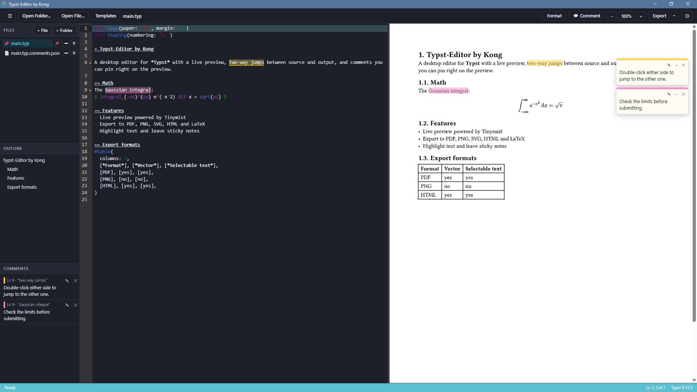

Typst-Editor
A desktop editor for writing theses in Typst, with live preview, two-way jumps between source and page, and comments pinned to the typeset page
by
November 2026
i
Introduction
1Introduction
Writing a thesis is mostly rereading it. Typst1 compiles fast enough that the typeset page can be the place where that rereading happens, instead of a PDF you open, mark up somewhere else and close again.
Typst-Editor puts your source and the typeset page side by side on a Windows desktop. The page follows every keystroke. A double-click on either side takes you to the same spot on the other, and when you read something that needs another look, you highlight it on the page and pin a note to it.
Everything stays in your project folder: the .typ files you write, the images they include, and a small comments file beside each document.
1.1Around the page
- Editor
- Syntax highlighting, autocomplete, go to definition and formatting, from the Tinymist language server[2].
- Workspace
- A file tree you can fold, an outline of your headings, a problems panel, quick open, a pinned main file and an image viewer.
- Templates
- Start from the Typst Universe catalog, or save your own documents as templates.
Live preview and two-way jump
2Live preview and two-way jump
The right half of the window is the typeset page, rendered by Tinymist as you type. Zoom it with the toolbar, with Ctrl and the scroll wheel, or with Ctrl + = and Ctrl + −.
Double-click a word in the source and the page scrolls to where it was set; double-click a word on the page and the cursor lands on its source. The place you arrive at flashes orange for two seconds, so your eye finds it without searching.
| Keys | Action |
|---|---|
| Ctrl O | Open a file |
| Ctrl P | Quick open |
| Ctrl S | Save |
| Ctrl E | Export PDF |
| Ctrl B | Show or hide the sidebar |
| Shift Alt F | Format the document |
| F12 | Go to definition |
| Ctrl 0 | Reset the preview zoom |
Comments on the page
3Comments on the page
Turn on Comment in the toolbar and a small palette appears over the page: yellow, green, blue and pink. Pick one, drag across words on the typeset page, and write a note. The note sits beside the page like a sticky note, and the same words are highlighted in the source, in the same colour.
Drag a note by its header to anywhere on its page; a dashed line keeps it tied to its text. Collapse a note to a small tab when it is in the way, or click it to jump to its source.
3.1Where comments live
Comments are saved next to the document, as main.typ.comments.json beside main.typ. They follow their words while you edit. If you delete the words a comment was on, the comment is kept and marked as detached until you remove it yourself.
Comments on the page
Soil samples were taken at four depths along each transect, and the moisture readings fell steadily from the river bank to the ridge. We attribute the sharper drop on the eastern slope to its thinner organic layer, which holds less water after rain and dries faster in the afternoon sun.
Export
4Export
When a chapter is ready to send, export it from the toolbar. Exports use the Typst command-line tool, so it needs to be installed (Chapter 5).
| Format | What you get |
|---|---|
| The document, ready to print or submit. | |
| PNG | One image per page. |
| SVG | One vector image per page. |
| HTML | A standalone web page copied from the live preview, with selectable text and working links. |
| LaTeX | A .tex file with its images beside it. Needs Pandoc[3]. |
Installation
5Installation
5.1Download
Typst-Editor runs on Windows 10 and 11, 64-bit.
Download for Windows v0.1.0 · 64-bit installerThe installer is not code-signed, so Windows SmartScreen may say Windows protected your PC
. Choose More info, then Run anyway. Every release is listed on the releases page.
For exporting, also install the Typst command-line tool:
winget install Typst.Typst5.2Build from source
You need Node.js, Rust and the Tauri prerequisites[4]. Put Tinymist v0.15.12 as tools/tinymist.exe, then:
git clone https://github.com/narongrit1053/typst-editor cd typst-editornpm installnpm run tauri devReferences
References
- Typst. Typst: a markup-based typesetting system. typst.app
- Myriad-Dreamin. Tinymist: an integrated language service for Typst. github.com/Myriad-Dreamin/tinymist
- J. MacFarlane. Pandoc: a universal document converter. pandoc.org
- Tauri. Prerequisites. tauri.app/start/prerequisites
- CodeMirror. A code editor component for the web. codemirror.net
- The Libertinus Project. Libertinus fonts. github.com/alerque/libertinus
Colophon
Colophon
This page is set in Libertinus Serif, the typeface Typst uses by default, so the text here looks the way your own documents will in the preview.
Typst-Editor is free software under the MIT License, © 2026 Kong. It bundles Tinymist (Apache-2.0) and the TeX Gyre Termes fonts (GUST Font License).
The source, issues and releases are on GitHub.
8